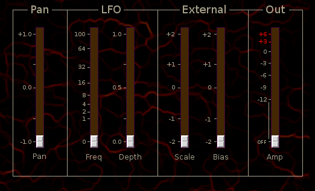

Panner
 Previous( Mixer )
Next( Pitch Shifter )
Home
Contents
Synth Catalog
Previous( Mixer )
Next( Pitch Shifter )
Home
Contents
Synth Catalog
Auto panner with LFO.
- Pan - Fixed pan position
- Freq - LFO frequency
- Depth - Position modulation by LFO
- Scale - Position modulation by external signal
- Bias - Fixed value added to external control signal
Buses:
- inbus - Audio input
- outbusA - Audio output A
- outbusB - Audio output B
- xbus - External control input
- lfoOutbus - Internal LFO output
Parameters:
- pos - Pan position (-1 ... +1)
- lfoFreq - LFO frequency (0 ... 100)
- lfoDepth - LFO modulation depth (0 ... 1)
- xscale - External control scale (-2 ... +2)
- xbias - External control bias (-2 ... 2)
- amp - linear amp (0 ... 2)
Previous( Mixer ) Next( Pitch Shifter ) Home Contents Synth Catalog